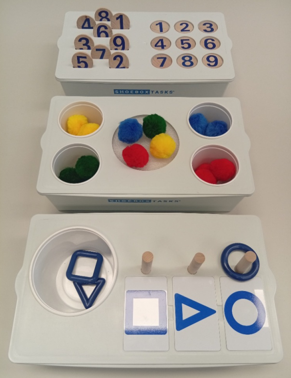
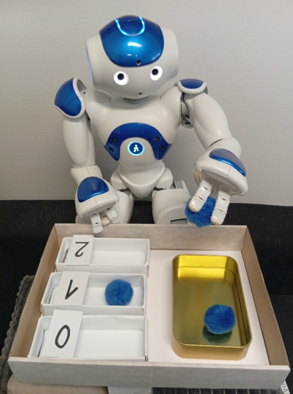
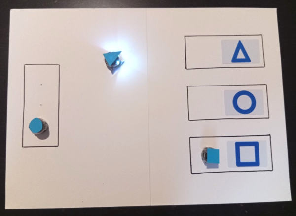

Shoebox-tasks
Shoebox-tasks are visually structured educational activities used in the education of individuals with Autism Spectrum Disorder. The original ShoeboxTasks®, developed and produced by Ron Larsen, are designed so that the goal of each task can be understood directly from its visual layout, without the need for verbal or written instructions.
This clear and consistent structure makes Shoebox-tasks especially well suited for vision-based analysis. In our work, we experiment with both the original ShoeboxTasks® and DIY versions adapted for different types of robots.



←
→